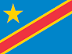

My name is Athanase and I go by Athanase. I was born in the Democratic Republic of Congo and currently live in Lubumbashi. I am currently working as a technical specialist and am passionate about programming and data analysis. I love spending time with my family and learning new technical skills, especially in Python and Web Development.
Lubumbashi, DRC
The Democratic Republic of Congo is the 2nd largest country in Africa. It is known for its vast natural resources and rich culture, holding immense biodiversity, including the Congo River basin.